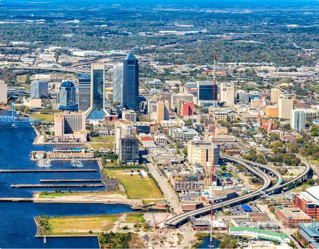
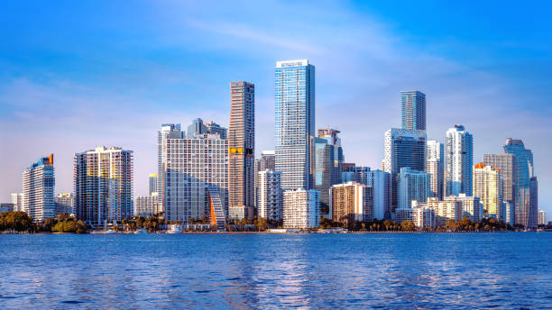
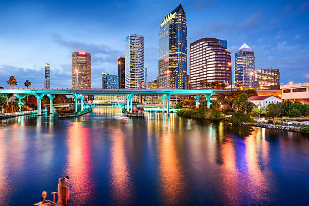

Florida
Florida is a southeastern U.S. state known as the "Sunshine State," famous for its warm climate, extensive beaches, and theme parks like Disney World. As a peninsula, it is bordered by the Atlantic Ocean and the Gulf of Mexico, and its capital is Tallahassee. The state has a subtropical to tropical climate and is a major hub for tourism, space exploration, and agriculture, particularly oranges.
FUN FACT!
Florida is the only place in the world where alligators and crocodiles coexist in the wild. The American alligator is typically found in freshwater, while the American crocodile lives mainly in brackish and saltwater in South Florida, allowing their habitats to overlap.
4 BIG CITIES IN TEXAS

Jacksonville, Florida, is a major city in Northeast Florida known for its size, diverse economy, and abundant recreational opportunities. It is the largest city by land area in the contiguous U.S. and the most populous city in Florida, with a population of over 1 million people.
What is Jacksonville, Florida Best Known For?
Jacksonville, Florida is best known for its large urban park system, extensive beaches, and strong arts and culture scene. It is also known for being the home of the Jacksonville Jaguars NFL team, the historic Florida Theatre, and being the birthplace of musical acts like Lynyrd Skynyrd.
MIAMI, FLORIDA 
Miami is a major coastal city in Florida, known for its vibrant multicultural scene, beautiful beaches, and status as a global hub for finance, art, and entertainment.
TAMPA, FLORIDA 
San Antonio, Texas, is the second-largest city in Texas and the seventh-largest in the U.S., known for its rich history and unique cultural blend of Mexican, Spanish, and German influences. Iconic landmarks include the Alamo and the River Walk, and the city is also a major military hub, earning it the nickname "Military City, USA". The city is popular with tourists, has a growing economy, and offers a diverse mix of modern and historic attractions.
ORLANDO, FLORIDA
Dallas, a modern metropolis in north Texas, is a commercial and cultural hub of the region. Downtown's Sixth Floor Museum at Dealey Plaza commemorates the site of President John F. Kennedy's assassination in 1963. In the Arts District, the Dallas Museum of Art and the Crow Collection of Asian Art cover thousands of years of art. The sleek Nasher Sculpture Center showcases contemporary sculpture.